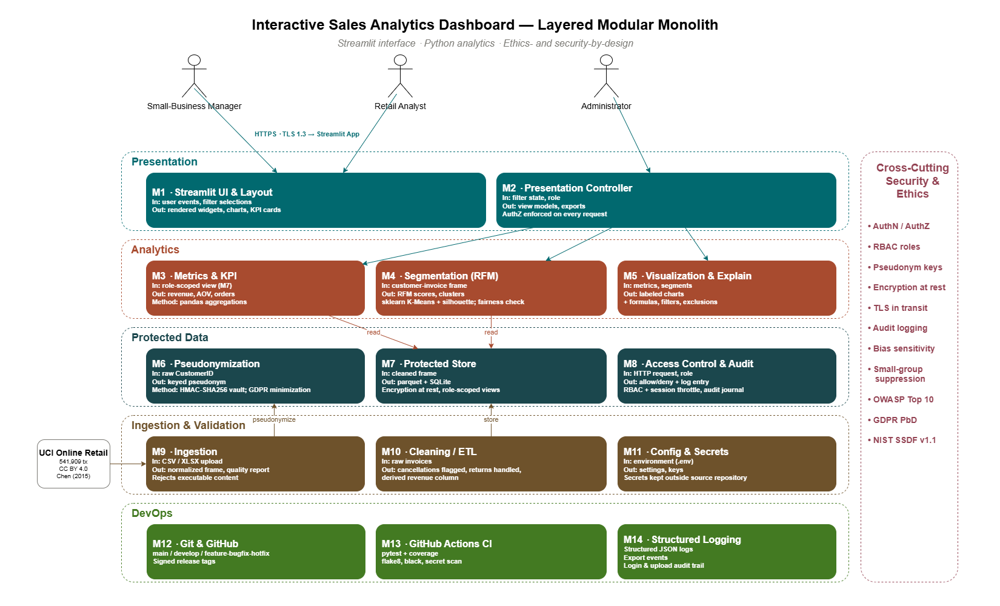
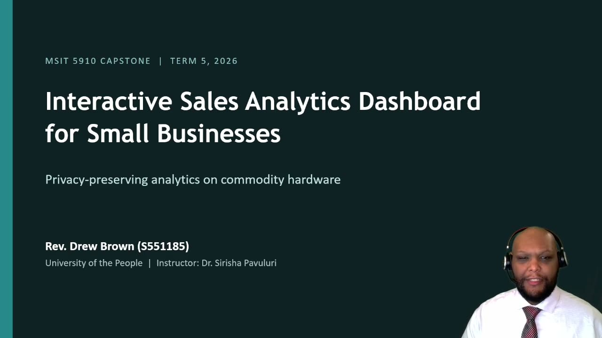
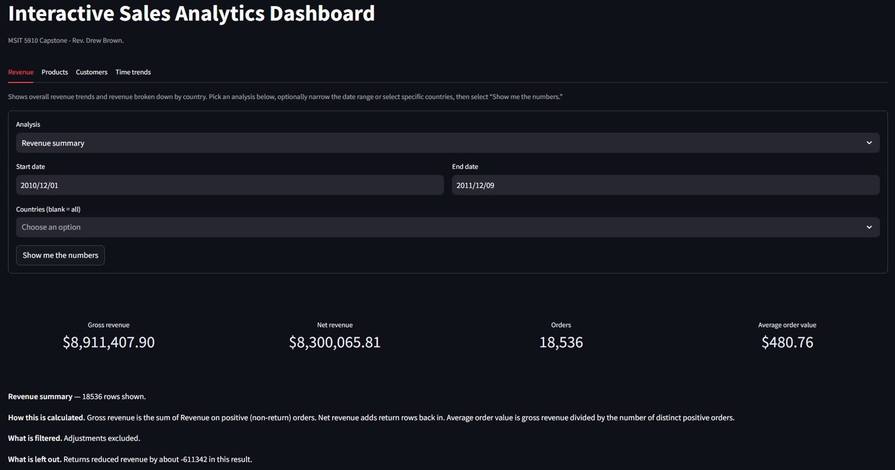
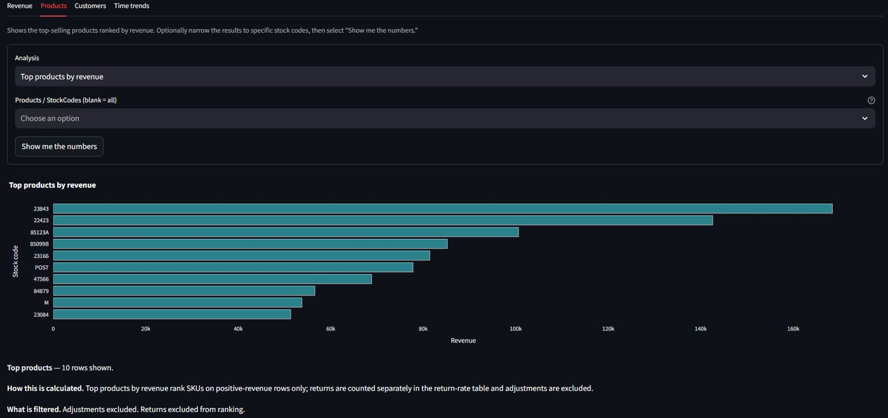
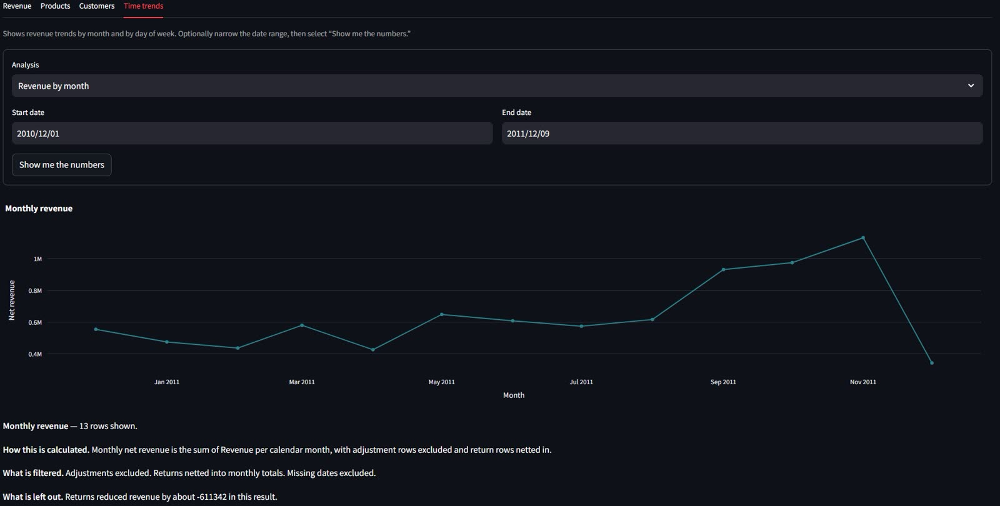
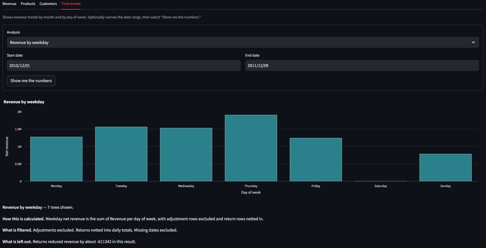
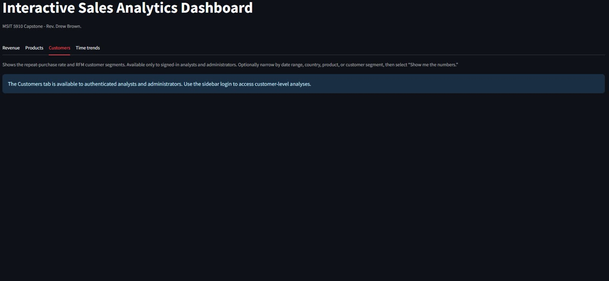
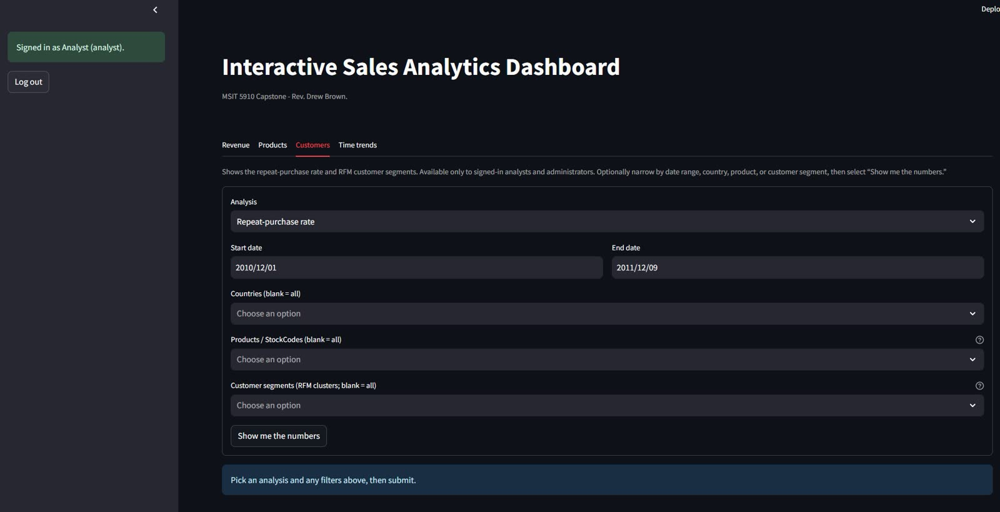

Case study — MSIT capstone, University of the People
Interactive Sales Analytics Dashboard for Small Businesses
A privacy-first decision-support prototype that turns raw retail transactions into role-scoped KPIs and customer segments — engineered with the same discipline I'd expect from a production system.
The problem
01 — CONTEXTSmall retailers generate the same kind of transaction data as large chains, but they rarely get the analytics. Commercial decision-support tools are priced and engineered for enterprises, and the affordable alternatives tend to ignore the parts that matter most when customer data is involved: privacy, access control, and auditability.
My capstone asks a simple question: can a solo engineer deliver an affordable, privacy-respecting analytics system that a small-business owner would actually trust? The answer is a Python and Streamlit application that ingests the UCI Online Retail dataset, pseudonymizes every customer identifier before it is stored, computes RFM-based customer segments with K-Means clustering, and serves role-scoped dashboards to three personas — owner, analyst, and administrator.
Architecture
02 — DESIGNThe system is a layered modular monolith — fourteen modules in five horizontal layers, crossed by a security-and-ethics band that every layer must satisfy. The monolith keeps a solo project deployable and debuggable; the module boundaries keep it testable and honest.
- M1–M2 Presentation. Streamlit UI, four-tab layout, authentication wiring, and a presentation controller.
- M3–M5 Analytics service. KPIs, RFM + K-Means segmentation with a stability holdout, and labeled visualizations with stability captions.
- M6–M8 Protected data. HMAC-SHA256 pseudonymization, an SQLite protected store with role-scoped read views, RBAC, and audit.
- M9–M11 Ingestion & validation. CSV/XLSX ingestion, cleaning and ETL for cancellations, returns, and derived revenue, plus strict config and secrets loading.
- M12–M14 DevOps & observability. Git and GitHub workflow, GitHub Actions CI, structured JSON logging, and the hash-chained audit journal.

Security & ethics by design
03 — CONTROLSPseudonymization at the door
Every CustomerID is replaced with an HMAC-SHA256 pseudonym before storage. The key lives in the environment, never in code or the container image.
Role-based access
Authentication, RBAC, and session throttling gate every view. Owners, analysts, and admins each see exactly what their role permits — nothing more.
Hash-chained audit journal
Every sensitive action lands in a tamper-evident, hash-chained audit log backed by SQLite — alongside structured JSON application logging.
Small-group suppression
Cohorts smaller than five are suppressed in every view, so segment analytics can never single out an individual customer.
Segment stability, not vibes
RFM segments are validated against a stability holdout, and every chart carries a stability caption so users know how much to trust it.
Standards-aligned
The design maps to the OWASP Top 10 (2025), NIST SSDF v1.1, and GDPR privacy-by-design — documented control by control in the technical report.
Engineering workflow
04 — DELIVERY
The repository is run like a team project even though I'm the only committer:
simplified Git Flow with protected main and develop
branches, short-lived feature branches, Conventional Commits, and squash-merged
pull requests. Every push and PR runs the same CI gauntlet.
Branch & commit
feature/* off develop, Conventional Commits, PR with review before merge.
Test
351 pytest tests across 14 test files — 90.3% coverage against a CI gate.
Lint & scan
flake8 style enforcement plus a secret scan on every push and pull request.
Containerize
A production Docker image with runtime-only secrets — nothing baked in.
Ship & roll back
docker compose up for a one-command run; rollback is rerunning a previous image tag.
Twelve years of industrial automation taught me that systems fail at the seams — so this one treats testing, auditability, and rollback as features, not chores.
Persistence follows the same philosophy: the raw dataset mounts read-only, encrypted
snapshots, the audit database, and logs live in named volumes that survive container
replacement, and configuration enters through .env at runtime.
See it running
05 — DEMO
Demo walkthrough — ingestion, sign-in, and all four tabs. Opens on SharePoint; UoPeople sign-in required.






Revenue tab — KPI summary with methodology captions
Dashboard screenshots — Revenue, Products, and Time-trends tabs, plus the Customers tab signed out and signed in.
Outcome
06 — RESULTSThe capstone shipped as a GPG-signed v1.0.0 release: a working decision-support dashboard, a full APA technical report with a literature survey, an architecture diagram and input-schema contract in the repo, and a recorded demonstration. Every claim in the report is verifiable in the commit history and CI runs.
More importantly, it is the proof point of my career transition — the same instincts I used to keep a 24/7 production facility running, applied to data engineering: instrument everything, test everything, and make failure recoverable.
- Technical report — working draft (PDF)APA · MSIT 5910
- v1.0.0 release — GPG-signed capstone submissionreleases/v1.0.0
- CI runs — pytest, flake8, black, gitleaksactions
- Input schema contractdocs/input_schema.md
- Branching & PR policydocs/branching.md
- Architecture diagramdesign/architecture.png
- README & MIT licenseREADME.md